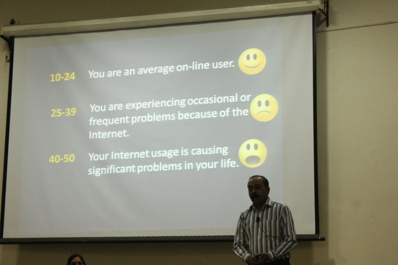

<div id="single-portfolio">
	<div id="portfolio-details" class="container">
		<a class="close-folio-item" href="#"><i class="fa fa-times"></i></a>
		
		<div class="row">
			<div class="col-sm-9">
				<div class="project-info">
					<h3> INTERACTIVE SESSION ON ADDICTION </h3>
					<p>An Interactive Session was organized by Counseling Cell, IIT Roorkee on Addiction on Monday, 28th October 2013 at O.P. Jain Auditorium. The Cell had invited Dr. das from Jolly grant, HOD of forensic dept. He engaged the students on various aspects of addiction. Student Counselor of the Cell, Dr Shikha Jain was also present at the session and gave some insightful thought on a few part on the issue. The event started at around 6:30 p.m. and continued for about one hour and thirty minutes to around 8:00 p.m .</p>
					<p>The event started addressing the most basic question i.e. what is addiction, where Dr das threw light upon its meaning and how any act starts to take the shape of an addiction. Then Dr. das moved on to types of addiction where are discussed addiction to computer(facebook), games, food, substance, exercise etc. He also performed a live questionnaire to make the students aware about their quantity of time they spend on computer and after how much level it starts to cross the danger line. Many students were interested to know that how much is too much as indicated in case of alcohol on smoking. Dr. das over each and every type of addiction individually and then indicated the effects of these addiction on various aspects of life whether it is biological or emotional or some other. He then proposed various solution to combat addiction and how to control acts that are moving on the path of becoming an addict. He quoted the ironical statement that "When we can stop it we don't and when we want to stop it we can't". </p>
                    <p>In the end an elaborate session of anonymous questions was conducted. Where audience asked various kinds to question like "if he drinks every fortnight is it normal for a 20 year old teenager?" or question on more personal stuff like making out and masturbation. Other question involved on much more larger spectrum like what can we do as students to save our-self, or friends and society as a whole which can be crushed in the arms of addiction. Dr. das answered all question sometimes as a friend and sometimes a doctor. All in all it was a fabulous interactive session where all contributed to solution to the problem of addiction which included audience, Dr. Shikha Ma'am and of-course Dr. Das. The Cell remains committed to its goal in helping the students overcome the various obstacles they face during their stay in the Campus, and make them capable to handle their personal and public problems with success in all walks of life.</p>
				</div>
			</div>
			<div class="col-sm-3">
				<div class="project-details">
					<h3>Event Details</h3>
					<p><span>Date:</span> October 28, 2013</p>
				</div>
			</div>
		</div>
	</div>
</div>
